“Of all the difficulties facing NASA in its bid to send humans to the Moon in the Apollo program, management was perhaps the greatest challenge.” - Roger D. Launius, chief historian, NASA
Humanity has a track record of wielding some serious project management chops. From building the Great Pyramids to landing on the moon, humanity’s greatest endeavors have required thousands of people working together on common goals. That requires intricate project management to pull off.
Although most of us will never be tasked with goals of such scope, many of us have to manage projects in one way or another. The Project Management Institute estimates there will be more than 15 million new project manager positions added to the global job market by 2020—and many of the rest of us will still have smaller projects to manage on our own.
Project Management, simplified, is the organization and strategic execution of everything that needs to get done to tackle a finite goal—on time and within budget. Whether developing new software, carrying out a marketing campaign, or landing a human on Mars, project management is what gets you to your goal.
Every project is different. There’s no one-size-fits-all project management system—and there may be no one perfect system for you. But the past decades of experience have lent us a number of effective project management methods that can guide your work.
Before diving into any one method, let’s answer the obvious question—Why do you need a project management system at all?—provide a brief history of project management, and define common project management terms.
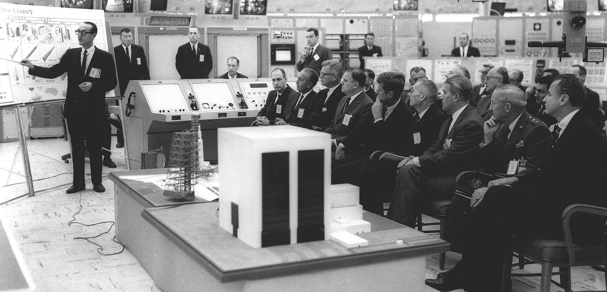
Neil Armstrong and Buzz Aldrin’s names will forever symbolize one of humanity’s greatest achievements: putting a human on the moon. Yet, with over 400,000 NASA employees and 20,000 companies and universities working together on the Apollo missions, the people who managed the project may have been the most crucial to actually landing on the moon.
In 1961, President Kennedy committed to putting a man on the moon—and bring him back safely—within a decade, when NASA had only ever sent an astronaut to space for 15 minutes. Such a staggeringly complex project necessitated an incredible amount of resources, teamwork, innovation, and planning. Do each part at random, and it’d never get finished.
As recounted in NASA’s “Managing the Moon Program,” the problem wasn’t so much what to do, as much as it was how to do so much in so little time. “We knew what had to be done,” recounted Dr. Max Faget, head of engineering at Johnson Space Center. “How to do it in 10 years was never addressed before the announcement was made. But quite simply, we considered a program of a number of phases.”
What mattered, then, was accelerating each phase and making sure the various teams and companies working on each part of the project could collaborate effectively, delivering finished work in a timely manner. That task fell to Dr. George E. Muller, who managed every part of the Apollo project from the White House to the smallest supplier. To ensure all phases worked perfectly, he broke each down into five areas: Program Control, System Engineering, Testing, Reliability & Quality, and Flight Operations.
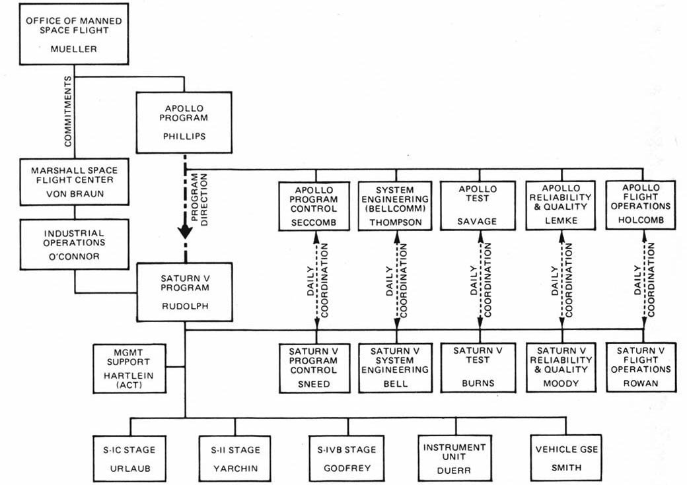
This five box system—called GEM boxes after Muller’s initials—was designed “to focus, early on in the program, on the fact that you were going to test things, and you ought to design so you can test them,” said Muller. Program Control described what was needed, managed the budget and requirements, and specified how each piece worked together. System Engineering designed new items, Testing made sure it worked, Reliability & Quality made sure each item was up-to-spec, and Flight Operations ensured it’d work in flight.
“When people were first confronted with your approach to things, like all-up testing and management of the systems level, there was an initial skepticism that that was the right way to do business,” recalled Dr. John Logsdon of the feelings when Muller’s project management plan was introduced. But it proved itself out.
As Dr. Muller said, “the amount of time it took to convince people that that was, in fact, a good thing to do, and, in my view at least, was necessary in order to provide the kinds of communications that were required in that complex a program in order to be sure that all those interfaces worked.”
Muller’s project management system was a resounding success. NASA put the first humans on the moon and brought them back to earth safely in less than a decade of Kennedy’s announcement. That was only possible by breaking down the enormous project into manageable, repeatable steps, ones that guaranteed success even when working with so many individuals and companies. It was a project management system—and teamwork—that won the space race.
Project Management wasn’t new to NASA and Dr. Muller; Egypt’s pyramids and the Great Wall of China showcase the results of project management from bygone millennia. There’s little documentation of early project management methods, and today’s project management methods are descended from ideas from the past century.
The most obvious way to break a project down is by its phases or tasks. Take cooking a recipe, for instance: you purchase the ingredients, combine them correctly, cook them, and then serve your finished meal. A simple project management method would be to list each step and check it off as it’s completed—a simple to-do list, perhaps, would suffice.
Maybe you’d want to cook multiple dishes—perhaps you’ll make a salad (with just three steps since it doesn’t need to be cooked) and a dessert (with just one step since it’s pre-made). You’ll need to serve each dish on time, and still make sure everything gets done. Suddenly, you’ll need a more powerful project management system, one that lines up the time needed for each task with the time each task is supposed to be completed.
That’s where one of the first modern project management tools—the Gantt chart—comes into play.
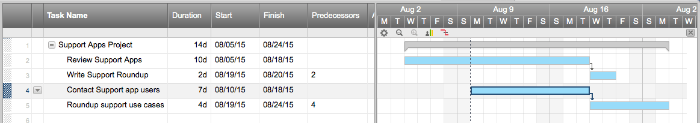
Invented independently by Korol Adamiecki and Henry Gantt in the early 20th century, the Gantt chart lists a project schedule based on start and finish dates. You list how long a task takes, and if any other tasks have to be completed before that task can start—for instance, you can’t serve your meal before you’ve cooked it. You can then calculate the “critical path” of the activities that must be completed by certain dates, and estimate how long the total project will take.
Traditional project management looks a lot like this dinner project, only with far more tasks and more stringent deadlines and carefully planned resources. A project with tight deadlines might use a Gantt chart to decide when to start tasks; a project where resources are more constrained (say, a dinner project where two different dishes need the oven at different temperatures) might use an event chain diagram—much the same as a Gantt chart, but focused on the usage of resources other than time.
Some projects need more or less structure than traditional project management gives you. If you’re publishing a series of articles on a blog, specific deadlines might not be as helpful as a process where you plan each article, write the first draft, get early edits and feedback, finish the article, proofread it, and then publish it. Instead of managing time or resources, you’ll manage process, running every task through the same checklist or workflow.
It’s for projects like these that Agile project management and its many offshoots—Lean, Kanban, and more—have been developed, to help you make a process to produce consistent work. Some projects need to add more dates and resource allocation back into an agile workflow, so more advanced techniques like Six Sigma and Scrum have been developed as well.
A century’s march of industrial and technological revolution have left behind enough examples of projects to have a project management system for almost every possible need. Even if your projects have less lofty goals and involve far fewer resources than sending a man to the moon, a structured project management system can help ensure your project’s success. You’ll just need to figure out what’s most important in your project—due dates, resources, process, or a mix of the three—and then pick a project management system that can help you effectively manage and finish your project.
Before you dive in, though, let’s cover a list of the most common—and likely unfamiliar—terms you’ll find in project management.
With that knowledge tucked away, it’s time to find a project management system that can fit your team. We’ll first look at Traditional and Agile project management—the two main ideas that most other systems are based on—then dive into Scrum, Kanban, Six Sigma and more.
Perhaps the most obvious way to break up your projects into a workflow, traditional project management is often referred to as “waterfall” project management because it handles one thing after another in a linear order. Think of it like your favorite mobile game, such as Candy Crush: you can’t unlock the next level until you’ve beat the one you’re in (and hopefully, your project is just as fun if not frustratingly addictive).
Traditional Project Management, or TPM as it’s abbreviated, stresses on-time delivery within a stringent budget. It’s best for projects where tasks need to be completed one after another—or where you want to emphasize planning and design before you start building the actual project.
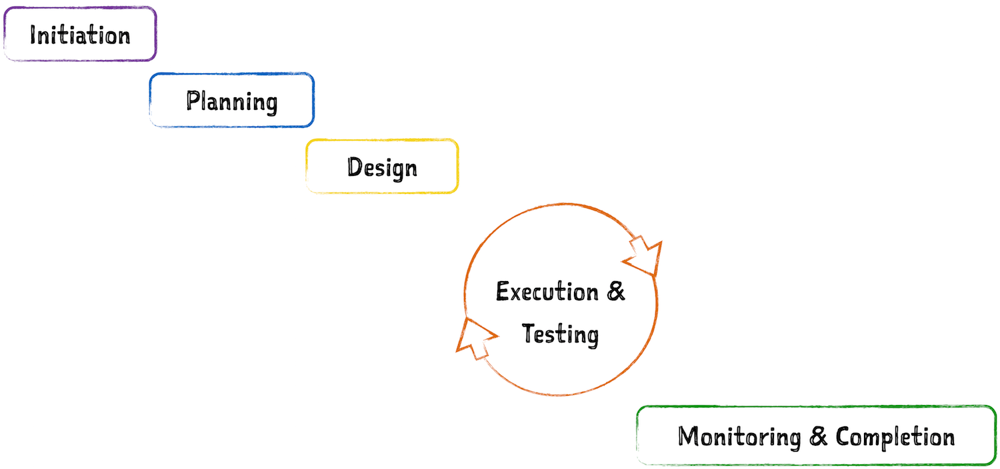
You could make your own “traditional” project management system by breaking any project down into steps that must be completed one after another, but standard TPM has six specific stages: initiation, planning and design, execution, testing, monitoring and completion.
Dig deeper into traditional project management styles, and you’ll find a few variations on these phases. Not all projects need every stage of the traditional waterfall model—some may need only three, while others need an “iterative waterfall” where work is divided into sprints rather than blocks of start-to-finish subprojects. Either way, the idea is the same: your project is broken into phases, and one must be completed before the other.
Since TPM is such a time-driven approach, common scheduling tools work great for traditional project management. You can list phases in a to-do list app, or block out time on a calendar. The best TPM tool, though, is the trusty Gantt chart which helps visualize each phase of your project and the time it’ll take. You could make one in a spreadsheet like Smartsheet, or use traditional project management tools like Microsoft Project to build them.
True traditional project management is perhaps an old school model, but its strengths have allowed it to keep hold. It requires upper management to clearly define what it is they want, giving the project focus and consistency early on. The emphasis on customer review and testing is meant to catch (and attack) problems early, causing a small headache now so that teams can avoid a horrid migraine later. It ensures the project will be well planned and tested thoroughly before delivery—something crucial for many real-world projects.
TPM can potentially cut down on stress and missed deadlines because each phase allows enough time for full completion and worst-case scenarios, meaning a disaster-free project can be delivered before deadline. With everything planned out, you’ll know the exact resources and time needed for the project—even if they may be over-estimated in rigidly-set estimates.
TPM’s rigidity is also its greatest downfall. It’s like an old, dry tree: it’s rigid, and doesn’t do well with change. Toyota, where Lean and Kanban project management were pioneered in their manufacturing departments, is even criticized for using TPM in their software development since it makes them less flexible to changes.
It’s perfect for places like the construction industry, where project scope and direction remains relatively unchanged throughout the project. But if time and resources aren’t your main constraint, or you need more flexibility to change your project as it’s under development, you might find that another project management method is better for you.
Every project isn’t structured in a way that’d work well with the Traditional Project Management method. Think back to our meal example: while cooking one dish might work perfectly in a traditional, one step at a time model, serving a four-course meal would be impossible if you were waiting for each part of the meal to be fully finished before starting on another.
That’s where Agile, or iterative, project management comes into play. Instead of breaking your project down into phases that each have to be done before the other, you split your project up into smaller projects and ship each one as steps towards reaching the full goal. You’ll plan the broad ideas of the project and divide it up, then plan, design, build, and test each part of the project individually. That lets you ship faster, and makes it easier to adapt the project to new needs before shipping it again.
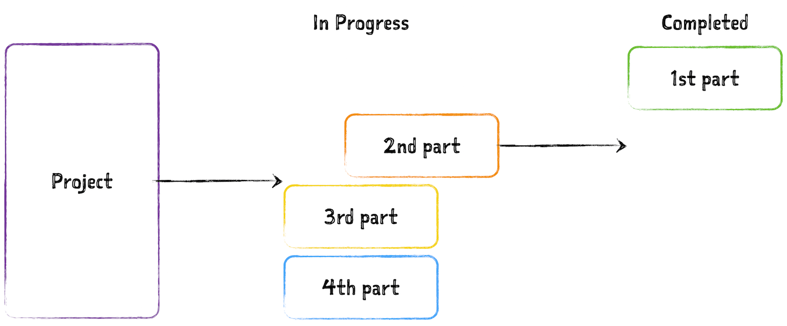
Agile isn’t a new concept—iterative project management, at any rate, has been a common idea since at least 1957. In software development, however, Agile became popular with the release of the Agile Manifesto in 2001. That document emphasized collaboration and the ability to respond to change, two practices TPM makes difficult.
Agile on its own isn’t a full project management method—it’s more of an idea of how projects could be managed. Scrum, Lean, Kanban and other more structured project management methods came from the iterative or Agile ideas, improved on them, and gave teams a better foundation to start managing their own projects.
Agile’s greatest strength is its flexibility—it can be almost anything you want it to be. That’s why it’s the framework behind so many other project management systems. You can take the Agile idea of breaking your project into completable chunks and doing each at a time, and then customize the overall process to fit your needs.
One of the main idea of Agile, as espoused in the Agile Manifesto, is “Responding to change over following a plan.” The flexibility you get from a less rigid system that still puts an emphasis on shipping parts of your project can be enough to make Agile worth adopting. Or, if your projects are usually open-ended where you need to continually ship new parts—say, a blog with new posts every day—Agile is a perfect way to break down your work.
As so often happens, Agile’s strength is its greatest weakness. A flexible system like Agile can make it difficult to focus and push your projects to completion if you’re not careful. There’s less set in stone, and no process to make sure the project is continuing smoothly, making it easy for projects to lose direction.
You can add your own processes on top of Agile—or just make sure your team’s always communicating and pushing the project forward—or you might end up finding that one of Agile’s more focused derivatives are better.
Arguably the most structured framework of the Agile methods, Scrum was first introduced in the 1986 as a way for “teams to work as a unit to reach a common goal,” according to its inventors Hirotaka Takeuchi and Ikujiro Nonaka. Scrum takes parts of Traditional and Agile project management ideas, and combines them for a structured yet flexible way to manage projects.
Like Agile, Scrum breaks projects up into tasks that are completable on their own, and then assigns each a “sprint”—two to four-week slots of time dedicated to ship that phase of the project, with daily sprints to ship some part of that phase. It’s that focus on time that makes Scrum a bit more like TPM, bringing more structure to the Agile idea.
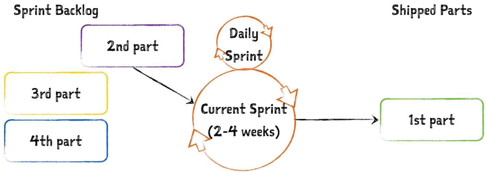
Then, to make sure the project is progressing as expected and meeting goals that may have changed along the way, Scrum requires a reassessment—and potential project changes—at the end of each sprint. It also divides responsibilities into three roles: the Product Owner (PO), the Scrum Master and the Team.
The Product Owner, who should be deeply familiar with all aspects of development, makes sure that everything aligns with business goals and customer needs with a mile-high view of the overall project. The Scrum Master is the team cheerleader—a liaison between the PO and the rest of the team—who makes sure the team is on track in each individual sprint. The Team then is the people working in each sprint, dividing the tasks and making sure everything is shipped.
With all this management and focus on deadlines, Scrum’s main structure revolves around 5 meetings: Backlog Refinement, Sprint Planning, Daily Scrum, Sprint Review and Sprint Retrospective.
Where other project management systems might look like they simplify your projects and make them seem more manageable, Scrum can at first glance look overwhelming. You’ll need to delegate responsibilities and plan extra meetings—but that overhead can help ensure your projects are successful and stay on track. It’s a structured way to make sure everything gets done.
Scrum is designed for projects that need parts of the project shipped quickly, while still making it easy to respond to change during the development process. With so many meetings and ways to delegate tasks, it’s also great to use when parts of the team may not be as familiar with a product’s context (i.e. developers from different industry backgrounds working on a system for the financial sector). You’ll always have someone looking out for the project as a whole, so if each person on the team doesn’t understand the entire project, that’s OK.
Netflix is a great example of Scrum’s ability to help you ship fast. It updates its website every two weeks, and Scrum was a good match because it stresses the user experience, eliminates what doesn’t work, and leaves a small window of time to get things done.
For each site iteration, the designers would test new features, forget the ones that didn’t work out and move on to new functionalities. Most of the benefits the Netflix team saw with Scrum was the ability to “fail fast.” As opposed to launching one massive redesign with many components, their bi-weekly incremental design changes were easy to track; if something went awry, they knew exactly what it was tied to—and could fix it, fast.
Like Netflix, you may experience downfalls of Scrum, such as upset designers who saw their beloved work chucked after testing showed it didn’t work—especially when the testing comes so quickly and some may feel that the new ideas would work with more time. You might also have trouble adjusting if your team is accustomed to long release cycles—or, depending on your work, you might find shipping so often isn’t necessary.
Scrum’s meetings and management overhead can also be overkill for some projects, turning into something where you’re more focused on planning sprints than you are on actually getting work accomplished during them.
Agile project management dictates that you break your work up into smaller, shippable portions, but it doesn’t say much about how to manage each of those portions of your project. Scrum tries to fix that with managers and meetings; Lean, on the other hand, adds workflow processes to Agile so you can ensure every part of your project is shipped with the same quality.
With Lean project management, you’ll still break up your project into smaller pieces of work that can be completed individually. You’ll also define a workflow for each task, something that’s reminiscent of the Apollo project and its five box system. Perhaps you’ll have a planning, design, production, testing, and shipping phase—or any other workflow of phases that you need for your task. Cooking a meal might need a preparation and cooking step, while a writing workflow might need an editing and fact-checking step.
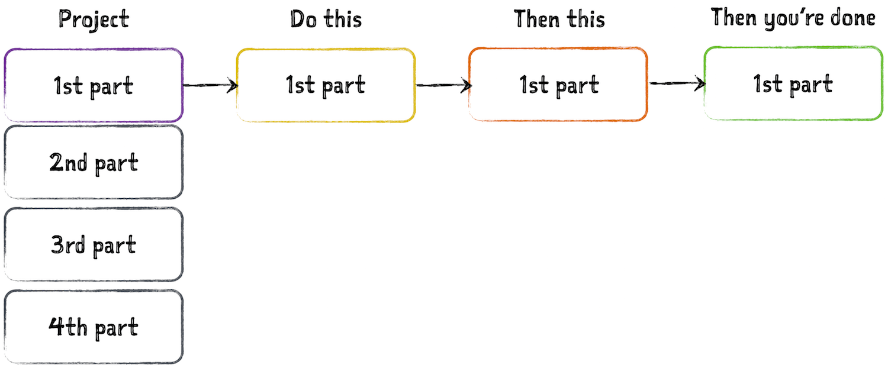
Lean’s stages and their flexibility make it a great system for making sure each part of your project is done well. It doesn’t have Scrum’s strict deadlines, or force you to work on one thing at a time as TPM does—in fact, you could have various tasks in various phases of your Lean workflow at the same time. What it does do is let you build a system tailored to your team.
Just like Agile, Lean is more of a concept than a set-in-stone project management system. You can use the Lean ideas, and build the system you need for your projects.
If you liked the idea of Agile, but wanted a way to make sure each part of your work is consistently finished with the same level of quality and oversight, Lean gives you the extra tools you need to make that happen. It’s still flexible—you can define the stages of your project portions as you want—but there’s enough structure to make your projects a bit more guided.
Every part of your project doesn’t necessarily need the same level of oversight or the same steps for completion, but lean treats everything the same. That can be one major downfall in using it to manage projects with diverse parts that all need completed.
Lean also doesn’t have any process to make sure the final project is completed, making it easy as it is with Lean to let your projects drag on forever. It’s again something communication can clear up, but it is worth keeping in mind.
Lean sounds a bit abstract on its own, but combine it with Kanban and it’s easy to build your own Lean project management system. Conceived by Toyota engineer Taiichi Ohno and implemented in 1953, Kanban is set up much like a factory floor, where a part might start out as a piece of metal and then, one step at a time, is turned into a finished part through a series of steps. In the same way when using Kanban, you’ll do some work towards a project, then ship that item on down the line to the next station where something else is done.
Kanban also pulls inspiration from the grocery store model: for maximum efficiency, carry just enough on your shelves to meet customers demand. So, in Kanban, instead of plowing ahead on shipping a complete project, you can leave tasks at various stages until they’re needed—whether that’s half-made, low-demand parts in a factory, un-edited blog posts in your queue without a publish date, or anything else that’s waiting for a need in your workflow.
It’s a lot more laid back than Scrum—there’s no set time for sprints, no assigned roles outside of the product owner, and a zen-like focus on only the task at hand. You could have meetings about your overall projects, or not: it’s up to your team’s needs.
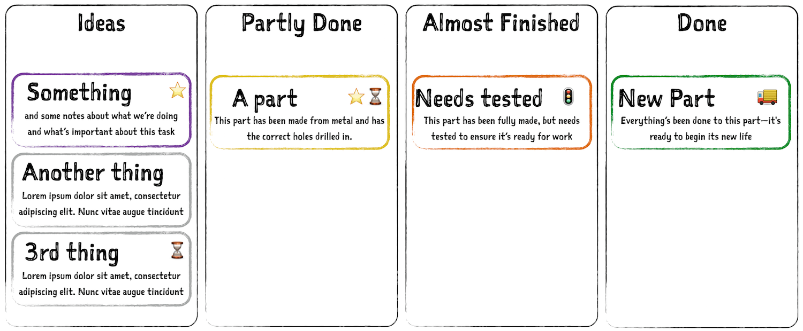
All you have to do is define the stages of your workflow, then setup a way to move each task from one stage to the other. In a factory, you might have different boxes or shelves for each stage: raw materials in the first, half-made parts in the second, and completed parts in the third. For other projects, you might have a card—whether a note in a program, or a physical piece of paper on a board—where you list info about a task, and you’ll move that card to different lists as the task progresses.
Your Kanban system can be as flexible as you want—it’s really just a way to visualize the Agile idea—but there’s four pillars of the Kanban philosophy that can help make sure your projects get shipped. These include:
Like Scrum, Kanban fits best with a highly cohesive team that knows what it takes to keep the flow going—but unlike Scrum, it’s designed for teams that are self-motivated and don’t need as much management or deadlines. It’s great for those who lean toward seeing the entire project at a glance.
While the two-week Scrum rule is absent and subprojects can take however long they’ve been given, you should still have an overall focus on efficiency—which should help save resources. If you’re careful to follow Kanban rules and only assign as much work as a team can handle, projects are less likely to go past deadline and team members are less likely to juggle other distractions. And because the product owner can change tasks that aren’t currently being worked on along the way, it allows for flexibility without frustration.
If only one of your team members has a certain in-demand skill, the individual can hold up everything. Kanban is ideal for teams that have members with overlapping skills, so that everyone can pitch in and help move the backlog list to zero. It’s also best for places where time on the overall project isn’t quite as crucial; if you must ship by certain deadlines, TPM or Scrum give you the time management structure you need.
Motorola wasn’t about to let the auto industry take all the credit for project management innovation, so decades after Toyota’s introduction of Kanban, the mobile phone company’s engineer Bill Smith created Six Sigma in 1986. It’s a more structured version of Lean than Kanban, one that sets specific stages and adds in more planning to save resources, ship quality products, and eliminate bugs and problems along the way.
The ultimate end goal is to make customers happy with a quality product, which is done through continuous improvement heavily reliant on data analysis. You ship parts of your project along the way, while at the same time address product pitfalls that come up—something very similar to the Apollo project’s workflow.
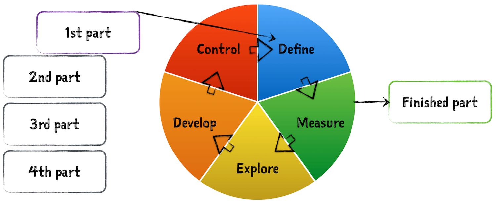
This is accomplished through Six Sigma’s five steps, known as “DMEDI”: Define, Measure, Explore (or analyze), Develop (or improve) and Control.
It’s much like a Kanban approach, only this time with set stages for the project that make you plan, define goals, and test for quality at each stage. You’ll likely end up with more meetings than Kanban calls for, but you’ll also have a far more structured way to approach each task. And just like Kanban, you can customize the phases for what your project needs—you’ll just need to keep the measure and control steps in place if you want to learn from past projects and continually improve your processes.
Six Sigma runs a tight ship, which can help you continually improve your processes and ship better results. By defining the goals and then reviewing them later, you’ll have objective data to measure project success with—something that’s far better than just going on intuition. While gathering and learning from data can take up a significant amount of time, you’ll be able to learn from what you’ve done and improve your work in the future—and that’s where time and quality savings should come in.
There are plenty of scenarios in which the job is never really done—that’s where Six Sigma shines. It helps you ship your tasks, learn from them, and improve the next time around.
Project manager seem to have similar gripes about Six Sigma: cost savings are the goal but not guaranteed since customer satisfaction will take precedence. If you’re continually adjusting your goals with each task in the project, it’s easy to let things spiral out of control even while you’re trying to ship your best possible work.
Then, Six Sigma’s underlying motto that good is never good enough can be frustrating for some, who may feel like the ghost of continuous improvement never brings them the satisfaction of finalizing a job well done. Some project may only be done once, and the focus on metrics and incremental improvements may seem unnecessary there.
NASA wasn’t the only government organization working to improve project management. The British government has honed their project management methods for years, cumulating with PRINCE2 in 1989. An acronym for PRojects IN Controlled Environments version 2, PRINCE2 throws sprints out the window, and instead approaches a project as one big sprint and stresses quality of delivery—like a traditional project management version of Six Sigma. The framework is more focused on the ends rather than the means; what’s expected of the end product will determine the scope and shape the planning.
There are three interests at play with PRINCE2: the business interest (is it going to make money?), the user interest (will customers find this valuable?) and the the supplier interest (do we have what we need to make this happen?).
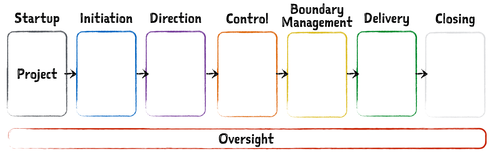
PRINCE2 has a more clearly defined personnel structure than most project management systems, one that works for larger projects that governments and other large organizations must undertake. Each team member has specific roles, which carry through all 7 of PRINCE2’s stages: Startup, Direction, Initiation, Control, Boundary Management, Planning, Delivery and Closing.
That may be a bit much for some projects, so you can still customize the stages for your needs, while still keeping the same general idea of PRINCE2’s structure, planning, and reporting back to upper management. Just like Scrum is a more structured version of Agile, PRINCE2 is a more structured TPM system, with some of the benefits of the Lean approach thrown in.
PRINCE2 works best when the stakes are high and there needs to be several pairs of authoritative eyes on the project every step of the way. If you’re big on feedback and guaranteeing nothing will go wrong, this might work well for you.
That’s why PRINCE2 is so popular in government offices—it’s used in the United Kingdom’s government, and is the standard for project management for the United Nations. It’s been successfully used by VocaLink to streamline real-time money transfers between banks in Australia and the UK, something where there is zero tolerance for flaws and where communication is essential.
Despite PRINCE2’s success in governments, it isn’t without its drawbacks. If used in the wrong environment, there’s lots of opportunity for bottlenecks and politics. Because of the extensive reviews and sign-offs, you might end up wrestling for control or find that work is delayed because someone hasn’t signed off yet. And strictly defined roles can stave off a sense of true collaboration.
Every project and team are unique, and so the project management systems that work best for each team are different. There are teams around the world that use each of these systems in wide ranges of industries—you’ll surely find software developers using TPM, governments using Scrum, and grocery stores using Six Sigma if you look hard enough.
More often, you’ll find teams using their own take on project management, using the best parts of different systems to fit their needs. Here are three stories where project management saved the day—stories that might help you figure out which system would work best in your team.
Back in 2010, the Vienna-based startup Tupalo, a social network that lets users review restaurants and places of interest, was experiencing rapid growth. Dealing with a never-ending mountain of requests from both users and employees, the developers were faced with more tasks than they could process. Instead of prioritizing, they’d work on more than one thing at a time—all the time.
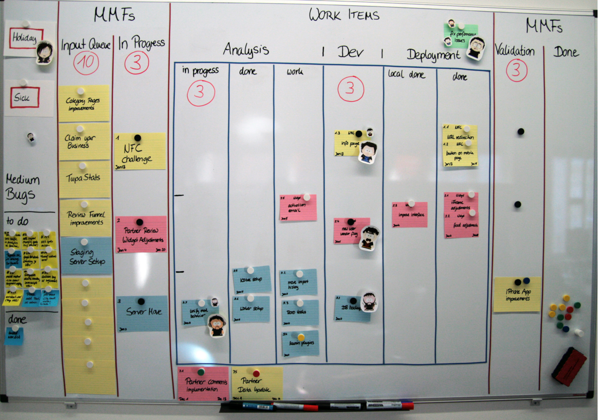
That’s not sustainable, but the time constraints of TPM and Scrum didn’t seem like they’d fit their team’s needs either. Instead, they went the Kanban route. Their project manager made a slight variation on the three status categories by adding a “deployment” category, and used color coded Post-its to assign a “class,” or value, to each task. Due dates were on red tasks only, so that in addition to seeing the whole project at once, developers could also instantly see priorities within each category.
The results were huge: a reinvigorated team that saw better quality work and faster delivery times. And Tupalo still uses Kanban. ### Traditional + Agile
Traditional Project Management isn’t typically used in software development, since teams prefer to be able to respond to changes throughout the development process and have more flexibility. But instead of skipping it altogether, you could combine TPM’s strengths with some Agile ideas for the best of both worlds.
That’s what Panoptic Development, a software engineering agency, has done, tweaking the traditional waterfall project management to fit their team’s needs. The project manager, Shannon Lewis, had been so used to the waterfall model that she was familiar with it’s constraints—and knew that typically, either quality, functionality or timeframes would have to be sacrificed.
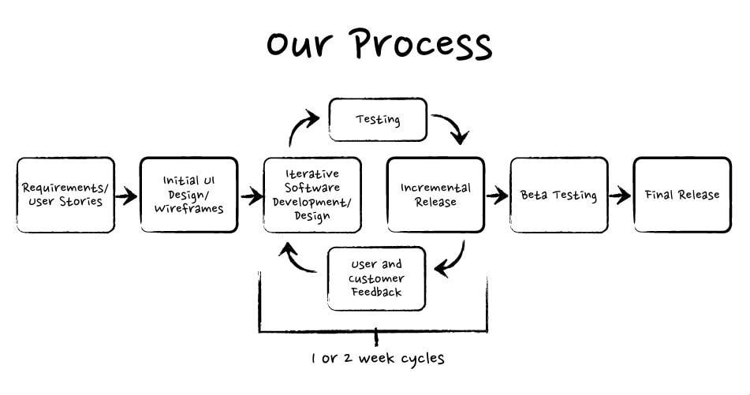
When Lewis started her own company, the tight budget, high-maintenance stakeholders, and unpredictable delays that a new firm brings wouldn’t allow for a rigid, traditional approach. She integrated agile practices into her methodology by blending TPM’s testing phase with Agile’s short iteration cycles. They kept their application in a state where it could always be tested, instead of completing something for delivery and then moving on to the next part.
That let them be able to focus on quality while still adding functionality they needed over time and hitting their deadlines—something neither TPM or Agile could have done on its own.
There are plenty of scenarios in which the job is never really done, and one example can be found in Kentucky’s recycling industry. The U.S. is the largest consumer of aluminum cans, which is why Secat Inc, a metallurgical research lab, teamed up with the University of Kentucky and the Sustainable Aluminum Industry to boost aluminum recycling rates.
They chose Six Sigma because data would be plentiful—they had statistics on everything from resident demographics to aluminum recovery rates. Saving money was also priority—every time a can wasn’t recycled, it cost the local materials recycling facilities money, in addition to the costly effects on the environment.
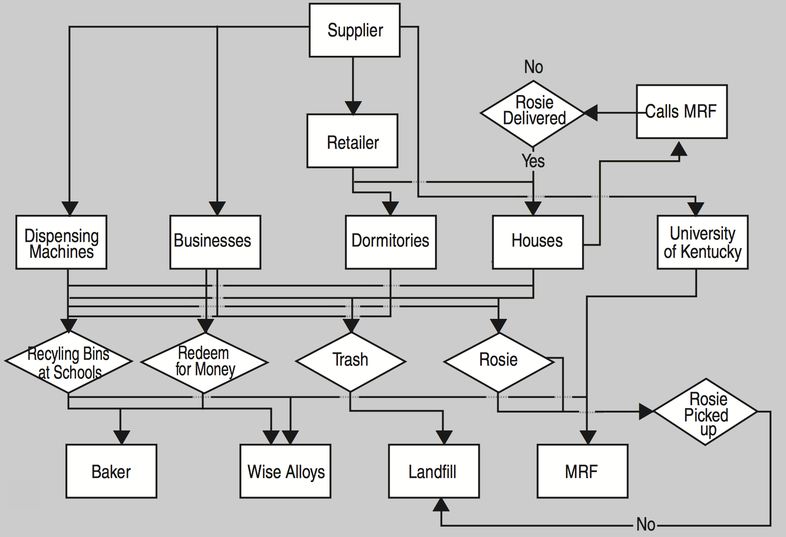
Their strategy was to target the demographic that consumed the most aluminum, and then figure out where those people go. They identified places like sporting events, fraternity and sorority houses, and used them to spread awareness of recycling. Since the Six Sigma methodology looks at defects—and how to demolish them—every can that went in the regular trash was considered a defect.
The team then measured the emerging statistics against their baseline to determine their campaign’s effectiveness. They found several steps missing in their process (there’s the continual improvement) that they then implemented, each time improving their collection rates. The control phase focused on keeping recycle rates up, and they made sure to monitor weekly charts, using data to verify the project control.
Altogether, Six Sigma fit Secat’s ongoing work, and helped them continually improve a task that typically wouldn’t seem to need project management.
Project management may be a science, but it’s not a precise science—there’s no set-in-stone, one-size-fits-all project management method. You might be lucky and have a project that exactly fits one of these methods, or you may need to build your own hybrid system—or a brand new one, as the Apollo team did in their quest to get humans to the moon and back safely. What’s important is that you use something to manage your projects, that gives your work structure and ensures you don’t miss anything crucial.
With a project management system in hand, it’s time to start managing your projects. But being a project manager is a complicated job, one that requires a unique skill set that’s perhaps most similar to that of a politician.
In the next chapter, you’ll learn how to manage projects effectively, with tips from project managers on what they’ve learned on the job.
Enjoy this chapter? Read it online or share it at https://zapier.com/learn/ultimate-guide-to-project-management/project-management-systems/.
Written by Zapier Marketer Matthew Guay, with contribution from freelance writer Jane Callahan.
Image Credits: Kennedy at Cape Canaveral by NASA via Flickr; GEM boxes photo via Wikipedia; Apollo 11 spacewalk image by NASA via Flickr.
#/media/File:Gembox.jpg){kind=link}